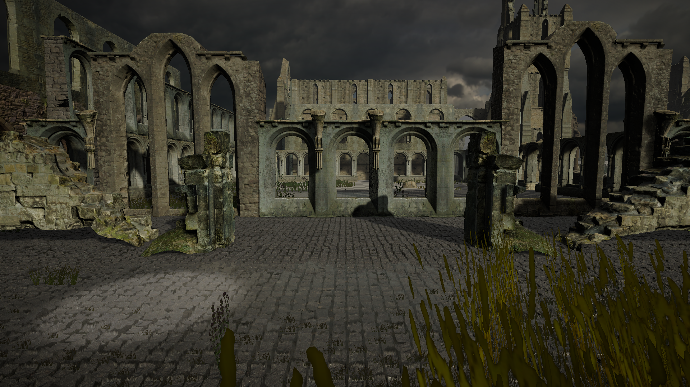

先统一尺度，再表达材料差异
发现的问题
早期锻造数值混用量级，很难判断是材料设计还是参数错误。
做出的调整
统一热力范围，以四个参数独立描述节奏。调整材料时可以定位到加热、冷却或加工效率，而不牵动整条流水线。

01 / 玩家体验
用材料的温度与加工节奏表达锻造，用时间与生命的取舍连接经营和探索。
02 / 设计重点
材料在仓库、加热台、锻造台与组装台之间拖拽搬运。热量不足时锻造暂停，需要重新加热再继续，让加工状态对应玩家的实际操作。
加热速率、锻造门槛、冷却速率、点击增量分开配置。所有热力统一在 0–100 范围内，材料差异体现为准备时间、操作窗口与容错。
7×7 地图以时间约束移动，村庄、事件与战斗改变生命和资源。金币、时间与 HP 在场景间保留，外出与返店是同一轮经营决策的两面。
技能区分自身、单体与全体目标。回合状态机约束操作顺序，治疗、防御与攻击共用清晰的回合边界，避免 UI 点击与结算并发。
03 / 项目画面

04 / 真实迭代
发现的问题
早期锻造数值混用量级，很难判断是材料设计还是参数错误。
做出的调整
统一热力范围，以四个参数独立描述节奏。调整材料时可以定位到加热、冷却或加工效率，而不牵动整条流水线。
发现的问题
不透明弹窗遮满地图，玩家做选择时失去自己所在的位置。
做出的调整
改为半透明遮罩，在拦截背后输入的同时保留地图可读性；目标点击层使用透明显示。
05 / 当前版本
已有 Windows 原型构建与店铺至地图的运行记录。目前展示系统设计和开发画面，暂不附未经核实的商店入口。